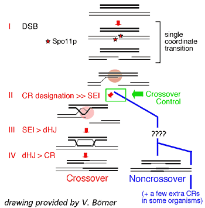

News Archives : 2004 : New Light on Crossover Differentiation
by Jim Henle
June 16, 2004
Nancy Kleckner
Neil Hunter
During meiotic prophase, replicated homologs undergo "crossing-over," the reciprocal exchange of chromosome arms between one sister chromatid of each chromosome. Crossing-over has important genetic and evolutionary implications. Additionally, it has an important mechanical function for the meiotic process itself: the presence of a crossover, in combination with connections between sister chromatids, provides a physical connection between homologs that directs their segregation to opposite poles at the meiosis I division.
How do crossovers occur? It has been known that many recombinational interactions are initiated between homologs but only a select few become crossovers: many are called, but few are chosen. The work of Boerner et al. reveals that the designation of which interactions will become crossovers is made much earlier than previously supposed, both with respect to biochemical steps and with respect to concomitant structural changes along the chromosomes. Meiotic recombination begins with the occurrence of programmed double-strand breaks and the broken ends then immediately interact in a "nascent" way with a partner DNA duplex. Boerner et al. show that crossover designation occurs just at this point, prior to any stable exchange of strands between the two participating DNA molecules, rather than at the end of the recombination process via resolution of Holliday junctions as classically envisioned. Designation of crossover sites also occurs immediately prior to, and independent of, the formation of the synaptonemal complex (SC), a meiosis-specific ribbonlike structure that links the axes of homologs at midprophase. In fact the SC is likely nucleated from newly designated crossover sites.
Designation of crossover sites also has the intriguing aspect that events occur with unique spatial and numerical patterning. Each homolog pair acquires at least one crossover, as required to ensure accurate segregation, but the average number of crossovers per pair is very low and those few exhibit a feature known as "interference": the presence of a crossover in one location on the chromosome reduces the probability that another will occur nearby. Interference implies the existence of a communicating mechanism along the chromosome.
How could such communication occur? The early designation of crossover sites provides new challenges for explaining this process. Previously, polymerization of the SC was proposed to be the mediating event. The work of Boerner et al. suggests not only that formation of the SC is not involved but that SC polymerization may even be a consequence of interference rather than its cause. In response to their new information, Boerner et al. propose an exciting new model for crossover patterning in which mechanical stresses and their redistribution along the chromosomes play a determining role.
A discussion of some of the broader implications of Boerner et al. and of a related paper from the Roeder lab at Yale (Fung et al., "Imposition of crossover interference through the nonrandom distribution of synapsis initiation complexes," Cell 116, 795–802) can be found in the same issue of Cell (Bishop and Zickler, "Early decision: Meiotic crossover interference prior to stable strand exchange and synapsis," Cell 117, 9–15).
In any case, the findings of Boerner et al. suggest that chromosomes have many new mysteries awaiting future elucidation and also challenge researchers to develop increasingly innovative and sophisticated approaches for this purpose.
